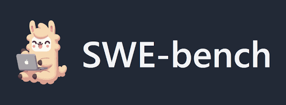
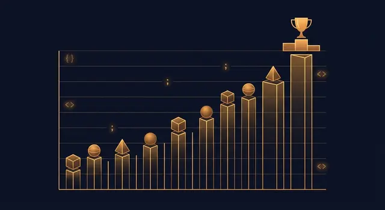

Data Quality Under the Lens is a new Real World Data Science column. Each edition explores real-world moments where data quality shaped outcomes, sometimes driving failure, sometimes preventing it. From near misses to hard lessons learned, we look at what happens when data is up to the task… or falls short.
If you spot a real world problem and think data quality could lie at the heart of the story, send it in to the RWDS mailbox and our Data Quality Detectives will analyse whether the Silent Drift, Proxy Trap, Spreadsheet Cascade, Governance Vacuum or Metric Mirage is responsible.
The Case of the Month
In 1929 the statistician Sir Josiah Stamp passed on a warning about official figures, taken from an example in India: “The Government are very keen on amassing statistics. They collect them, add them, raise them to the nth power, take the cube root and prepare wonderful diagrams. But you must never forget that every one of these figures comes in the first instance from the chowky dar [village watchman], who just puts down what he damn pleases.”
Almost a century later, AI has its own wonderful diagrams: benchmark leaderboards. Think of a benchmark as an exam that several AI models take so we can see which performs best. Every model is scored on the same inputs against the same ground-truth labels. Developers, buyers and analysts rely on the test scores (arranged as a leaderboard) to choose between models, yet few ever look at the ground-truth labels on which individual scores depend.
SWE-bench Verified was one of the most widely quoted benchmarks in the field of software development. Each of its 500 test items gave an AI system a real software bug and asked it to fix the code. The associated ground truth label (just ‘label’ from here) was a set of automated tests taken from the original developer’s own fix. What this meant was that a single person’s solution was encoded as the correct answer to the problem, regardless of whether other correct solutions were possible. Engineers had screened the items, the set was sold as human-validated, and by early 2026 top scores had passed 80%.
Then OpenAI, which helped build SWE-bench Verified, audited the items its models struggled to solve consistently. Of the 500 tests, at least 82 items (one in six of the test set), had labels that could mark a correct fix as wrong. Worse, the test data had leaked, meaning that every leading model had access to some of the answers during training. Label error and test-set leakage are two of the oldest problems in working with data, and here, they sat inside one of AI’s most trusted measures.
Nobody found these issues through routine checks. OpenAI only looked because its models were failing. Eight months later, scores are still being published, and the test set is still downloaded more than 100,000 times a month with no warning attached.
The figures still came from the watchman. We had just stopped asking who he was.
What Actually Happened?
The Data The test set grew out of an earlier collection, SWE-bench, released by university researchers in 2023 and built from GitHub. When a user spots a problem in a project there, they file an issue, a short written report of what is going wrong. A developer then proposes a fix as a pull request, a bundle of code changes that the project’s maintainers review and accept. Pairing each resolved issue with its accepted pull request gave the researchers 2,294 records from 12 popular projects, all written in the Python programming language.
Every record has the same shape. The input is the project’s code as it stood before the fix, together with the text of the issue. The output is a patch, a set of edits to that code. Marking is automatic: the patch is run against tests that the system being evaluated never sees. One group checks that the reported problem has gone. A second group, the regression tests, checks that nothing that worked before has now broken. An item counts as solved only if both groups pass, and the score is the share of items solved.
The original collection was noisy. Some issues were too vague to say what was wanted, some tests failed for reasons unrelated to the code, and some would accept only a very particular fix. To produce the Verified version, OpenAI and the SWE-bench authors asked professional software engineers to review 1,699 records. Three reviewers judged each one independently, and any record flagged as unclear or unfair was dropped.
The aim was a clean, realistic measure of everyday software work: read a problem report, find your way around unfamiliar code, make the change and leave everything else working.
The Fault Line OpenAI’s audit found two ways the tests went wrong. In 35.5% of audited items they were too narrow: they checked how a fix was built rather than whether it worked. In one, the tests called a helper function by a name the issue never mentioned, so a patch that fixed the problem failed simply because it didn’t use that exact name. In 18.8% they were too wide: they checked for things the issue never asked for. For example, in another test, the original fix had addressed three reported problems while the issue described only one, so systems that fixed what they were shown (and not two further invisible problems) still failed.
It is like an exam whose marking scheme accepts only the examiner’s own working. A student can reach the right answer and still lose marks, and the grade no longer specifies whether or not the final answer was correct. Statisticians know this as an imperfect reference standard: the answer key’s mistakes are charged to whoever is being tested.
Leakage made it worse. Narrow tests reward reproducing the original fix exactly, so they were easiest to pass for systems that had already met that fix during training.
The Blind Spot The cleaning that produced SWE-bench Verified was a one-off review made before the benchmark came into use. Reviewers could judge whether a test looked reasonable, but they could not foresee every valid fix that more capable systems would later produce. The initial review also did not establish how the benchmark would be reassessed once scores started coming in.
How the audit was designed matters for reading its results. The 138 items OpenAI examined were ones its o3 model did not solve consistently across 64 attempts, which is where faulty tests were most likely to surface. Within that sample, 59.4% were faulty. Items that models solved reliably fell outside this review, so one in six is a documented minimum, not an estimate of the error rate across the whole benchmark.
Two different faults were at work. Defective tests reject valid work. Training contamination rewards prior exposure and can hide defective tests altogether: OpenAI reported that GPT‑5.2 solved 31 items its reviewers had judged almost impossible. Neither fault is random noise. Both bias the score systematically, whatever its level. And because the items came from public code, the exposure grew with each new generation of systems trained on more of the internet. A rising score could reflect better systems, more prior exposure, or both, and the number alone cannot say which.
R. A. Fisher put it bluntly in 1938: “To consult the statistician after an experiment is finished is often merely to ask him to conduct a post mortem examination. He can perhaps say what the experiment died of.” OpenAI’s audit came 18 months after the benchmark launched. It could say what had gone wrong, but only after the scores had been published.

The Amplifier SWE-bench Verified scores were easy to compare and easy to publish, which helped the benchmark become a familiar reference point in AI development. OpenAI used it when introducing GPT-4.1, reporting 54.6%. When Google announced Gemini 2.5 Pro at 63.8%, it called the benchmark the “industry standard for agentic code evals”, meaning tests in which an AI system works through a coding task on its own. Google later launched Gemini 3 Flash at 78%.
Scores kept appearing after OpenAI’s audit. In April 2026 Anthropic reported 87.6% for Claude Opus 4.7, next to its result on a newer and harder test, and Moonshot AI reported 80.2% for Kimi K2.6. Comparison websites still rank models on Verified, mostly using figures the developers supplied themselves.
None of these higher scores appear on the official SWE-bench leaderboard. It has not added a Verified result since February 2026, and its top score is 79.2%. There is also a simple arithmetic problem. The audit found at least 82 of the 500 tasks to be faulty, which leaves at most 418 sound ones. Solving all of those gives a score of about 84%, so anything higher must include passes on faulty tasks, and those are hard to pass without having seen the answer.
Disaster or Near-Miss?
Benchmark scores don’t stay in research papers. They find their way into procurement requirements, influence purchase decisions and give developers targets to optimise against, even when those scores tell us little about how a system will perform on real code. When scores start influencing contracts and budgets, their shortcomings can have real consequences.
There’s no clear evidence that SWE-bench Verified led to a specific bad decision. But a faulty measure can still become part of how models are chosen and money is spent, long before anyone understands its limits.
OpenAI deserves credit for publishing its audit rather than quietly moving on. But its answer was to point everyone to a replacement, SWE-bench Pro. Less than five months later, in July 2026, it audited that too, estimated that around 30% of its tasks were broken, and withdrew the recommendation. Some faults were familiar: tests too strict to accept valid fixes, and task descriptions that left out what the tests required. One cut the other way: tests too weak to catch incomplete fixes. OpenAI traced the problems to the same root, tests written to check one specific change rather than to define what a correct answer looks like.
Switching benchmarks didn’t fix the problem, because the problem was in how the data was made. So far this is a near-miss; but it isn’t over yet.

Why This Matters Now
Most of what we hear about AI progress arrives as a test score. From buyers to regulators, the people who rely on those scores rarely see the data behind them. They are trusting labels they can’t check and a test set whose history they don’t know.
That makes this more than one benchmark’s problem. AI systems are now trained on so much of the public internet that any test built from public material may already have been seen. And more and more AI output is marked automatically, by tests or by other AI systems, so the answer key decides what a score really means.
If AI is going to be judged by numbers, the data behind those numbers needs the same care as any other dataset: checked labels, a clear record of where it came from, tests for leakage, and an honest note of when it stopped being fit for purpose.
The Practitioner Takeaway: stop staring at the whole mountain!
Before accepting a benchmark score, ask what sits behind it.
- Find out how answers are marked. If correctness is judged against one reference answer, or against tests built from it, ask whether a different but correct answer would pass. Have someone check a sample by hand.
- Look at the passes as well as the failures. While faulty labels tend to show up among the items that the system fails, leakage shows up as easy passes on items that should be hard. Review a sample of both, and remember that an error rate found only among failures is a minimum, not an estimate for the whole test.
- Ask whether the test could have been seen. If the questions or answers were public before a system was trained, treat a high score with caution until someone has checked for contamination.
- Compare the score with the quality of the answer key. When a score climbs past the share of items with sound labels, it needs explaining before it is celebrated.
- Keep checking. A test set that was sound when it was built can stop being fit for purpose as the systems it measures change. When that happens, go back to the comparisons and decisions that relied on it.
The useful question is not “What did the model score?” but “What evidence does that score actually give us?”
The Data Quality Pattern
A metric can look precise without being trustworthy.
The Metric Mirage appears when a score, rate or ranking is treated as a direct measure of performance even though the data behind it is narrower, noisier or less reliable than the number suggests. A score given to one decimal place feels objective. It is easy to compare and hard to question, and the headline figure travels further than the caveats.
John Tukey described the trap in 1962: “Far better an approximate answer to the right question, which is often vague, than an exact answer to the wrong question, which can always be made precise.” SWE-bench Verified gave exact answers, but to a narrower question than it seemed to. That question wasn’t “can this system fix software?” but “does its patch pass one developer’s tests, on items it may already have seen?”
Whenever a metric carries more confidence than the data behind it can support, the mirage has already formed.
None of this means we should stop using benchmarks.
None of this means we should stop using benchmarks. We should just treat them as what they are: datasets, with all the problems datasets can have.
As AI moves into health, finance and public services, the numbers used to justify it will carry more weight. Building, maintaining and rechecking the data behind those numbers is part of the job, not an afterthought.
Stamp’s watchman wrote down whatever he pleased, and the wonderful diagrams were built on top. Benchmarks have their own watchmen: the developers whose fixes became the answer key, and the reviewers who passed it. Most of them did careful work. But someone still has to check, and keep checking long after a test set has become familiar.
Who checks the watchman? Anyone who reports the score.
Good data quality means looking beyond the data itself to question whether the measures we use to assess it are reliable.
- About the author:
- Francis Osei is the Lead Clinical AI Scientist and Researcher at Bayezian Limited, where he designs and builds intelligent systems to support clinical trial automation, regulatory compliance, and the safe, transparent use of AI in healthcare. His work brings together data science, statistical modelling, and real-world clinical insight to help organisations adopt AI they can understand, trust, and act on.
Copyright and licence : © 2026 Francis Osei

 This article is licensed under a Creative Commons Attribution 4.0 (CC BY 4.0) International licence.
This article is licensed under a Creative Commons Attribution 4.0 (CC BY 4.0) International licence.
How to cite :
Osei, Francis 2026. “Data Quality Under the Lens: Who Checks the Watchman?” Real World Data Science, 2026. URL